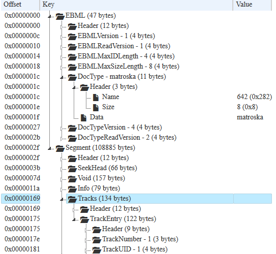
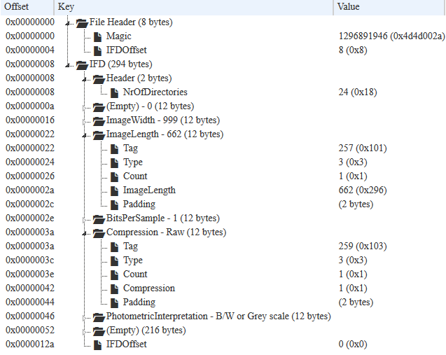

Media Analysis Tools
How we check media files
Jérôme Martinez
MediaArea.net SARL
Different needs
- Metadata extraction and review
- File format (containers, coding) validation
- File format investigation
- Local policy conformance
- Metadata editing/fixing
- Audiovisual quality control
MediaInfo
Metadata extraction and review
- Convenient unified display
- Of most relevant technical and tag data
- For video / audio / text / ancillary data files
- 6k downloads/day, 40k GUI launches/day
- BSD-2-Clause license

MediaInfo
Supported formats
- Most formats used by either individuals or professionals
- Detects weird transport layers
e.g. Dolby E spanned on 2 audio tracks, subtitles in the ancillary data, sidecar files...
MediaInfo
Export
- Classic flat text, XML...
- Also in professional output formats e.g. PBCore, EBUCore, FIMS...
MediaConch
A conformance checker
- Implementation checker
- Policy checker
- Reporter
- GPLv3+/MPLv2+ license

MediaConch
Supported formats
- Implementation checker for Matroska, FFV1, PCM natively
- Implementation checker for PDF and TIFF via plugins
(veraPDF and DPFManager projects) - Policy checker for all formats
- Optional server mode (watch folder)
- Optionaly an ordonancer
e.g. FFmpeg transmux / transcode before checks
MediaTrace
Deep check of bytes
- Provides meaning of each bit in a file
- Work in progress (sometimes stalls due to too much information, only first frames displayed)
- Available in MediaInfo GUI (text mode), MediaConch GUI (Tree mode), MediaInfo and MediaConch CLI (Text, XML)
- BSD-2-Clause license (in MediaInfoLib)
MediaTrace
Example with a Matroska file

MediaTrace
Example with a TIFF file

BWF MetaEdit
WAV/BWF Metadata checker and editor
- Focused on WAV format, used a lot by archives
- Difference between requirements and recommandations
- Can delete/modify/add metadata
- Can export metadata
- Public domain

BWF MetaEdit
Enforce the guidelines developed by
- FADGI (US Federal Agencies Audio-Visual Working Group)
- European Broadcasting Union (EBU)
- BWF (EBU tech 3285)
- CodingHistory (EBU tech R98-1999)
- OriginatorReferencce (EBU tech R99-1999)
- Microsoft (INFO chunk)
QCTools
Audiovisual quality control
- On the decoded frame
- Focused on digitalized content
- Initially focused on video artefacts, now checking also audio
- BSD-3-Clause license for UI/new filters, GPLv2+ for FFmpeg libs
QCTools
Tied to FFmpeg
- Depends on FFmpeg for demux, decode, and check
- Some tests were already present in FFmpeg (especially libavfilter), we added an UI
- We also added some tests to libavfilter upstream
QCTools
List - Video
- YUV: MIN, AVG, MAX, LOW, HIGH, Difference
- Saturation, Hue, Temporal Outliers, Vertical Line Repetitions
- Broadcast Range, Crop Width/Height
- Peak Signal to Noise Ratio (PSNRf), Structural SImilarity Metric (SSIMf), Mean Square Error (MSEf)
- Interlacement Detection
Note: tool is focused on field comparison for the moment
QCTools
List - Audio
R.128, Audio Phase Meter, DC Offset, Audio Diffs, RMS

Interfaces
Not only one interface: different people, different needs, different technical knowledges
- Command line
- Graphical interface
- Server (REST API)
- Web interface
Standardization
Issues:
- Checking is good, but compared to what?
- Lack of open video/audio standards
- Lot of people work on lossy formats (e.g. VP9, AV1, Opus)
- Some people need lossless formats
Standardization
CELLAR: IETF workgroup
- Container: Matroska
- Video: FFV1
- Audio: FLAC (not started)
Sponsorships
Lot of work, we need sponsorship
- Several compagnies (usually don't like to be named :( )
- European Union (especially PREFORMA project)
- US Federal Agencies Digital Guidelines Initiative
- National Endowment for the Humanities
- The Knight Foundation
Contributions
We need you!
- Patch for new features
- Patch for bug fixes
- Participation in CELLAR
- Design (e.g MediaConch new displays)
- Participation in documentation writting
- Testing
- ...
Stay in touch
MediaInfo: https://mediaarea.net/MediaInfo
MediaConch: https://mediaarea.net/MediaConch
BWF MetaEdit: https://mediaarea.net/BWFMetaEdit
QCTools: https://mediaarea.net/QCTools
Follow us on Twitter @MediaArea_net
Jérôme Martinez: jerome@mediaarea.net
Slides: https://mediaarea.net/Events
License: CC BY